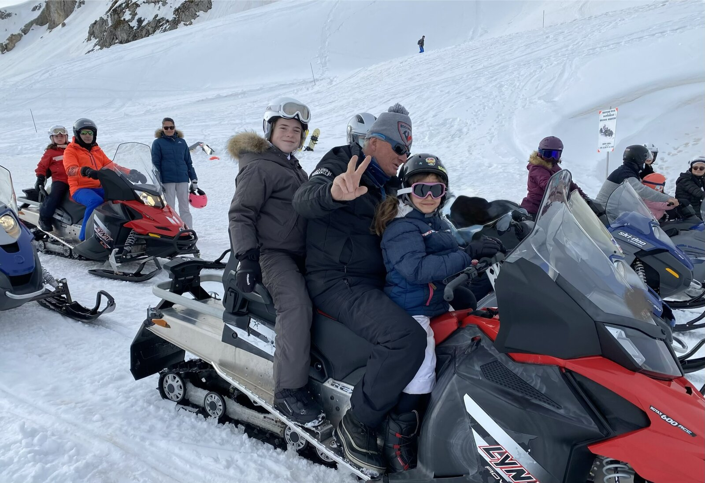

Snowmobiling in Les Carroz d'Arâches: evening outings and booking

When the pistes close and the resort tips into the blue of dusk, a different mountain begins. Snowmobiling is the activity that stretches the day out: the engine's growl, the headlight sweeping the snow, and the ski area all to yourself once the skiers have gone home. In Les Carroz d'Arâches it's an evening outing to book ahead — departures are in the late afternoon, and slots go fast during school holidays.
Where to go in Les Carroz
The local operator is Nature Motoneige, based on the route de Flaine in Arâches-la-Frasse — the same road that climbs to the Col de la Pierre Carrée, a few minutes from the Lodge. The team takes its machines onto the slopes and forest tracks of the ski area once the pistes have closed, at sunset or after dark. Outings run every day from 1 December to 15 April, usually departing at 5.30 pm.
The options
Three formats exist, depending on whether you want to drive or not:
- Caribou ride — one machine for a driver and a passenger. The family or duo option, from €120 per snowmobile (for one or two people).
- Prestige ride — one person per machine, for those who want to drive solo and make the most of the sensations.
- Passenger behind the guide — the taster option, from €45, ideal for children or to sample the experience without driving.
To round off the evening, Nature Motoneige can add a fondue under a tipi after the ride — the kind of finish children talk about for a long time. Exact prices, the minimum age to drive (licence required) and route details are on their website; the Les Carroz tourist office also takes bookings on +33 4 50 90 00 04.
Good to know before booking
- Driving requires a car licence. Children and those without a licence ride as passengers, behind a guide or a parent.
- Wrap up properly. The cold on a snowmobile — headlight on, speed in your face — is nothing like a day's skiing: liner gloves, neck warmer, warm boots. Helmet and sometimes a suit are provided.
- It's an evening outing. Plan the slot after skiing, and factor in the drive back in the dark: from the Lodge it's only a few minutes away.
- Book ahead. Machines are limited and evening slots much in demand during the holidays.
From the Lodge
Nature Motoneige is on the route de Flaine, a stone's throw from the Lodge: the covered private car park waits for you on your return, and the Nordic bath on the terrace warms up chilled drivers. It's one of those outings that turns a plain ski week into a real holiday memory. Our concierge Clémentine can help you book the slot and fit it around your days on the slopes.
Fancy a stay at the Lodge?
4★ apartment for 6, three bedrooms, 45 m² terrace and Nordic bath, in the centre of Les Carroz d'Arâches.
Check availability